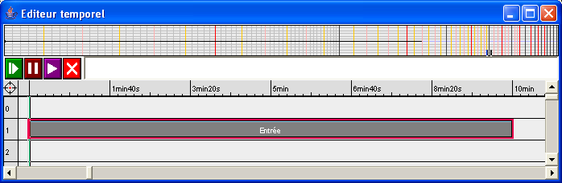
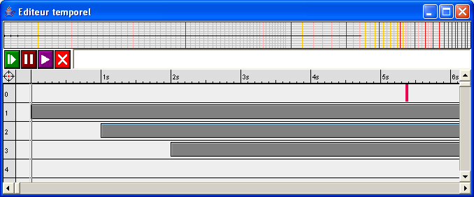
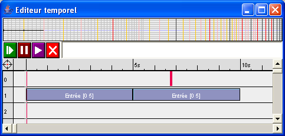
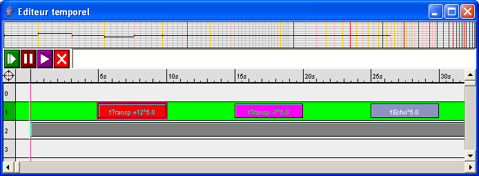
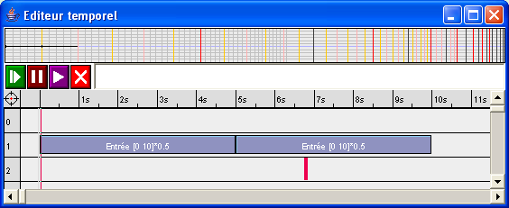

L'utilisation du flot temps-réel permet de construire des transformations et interactions temps-réel. Le flot temps-réel est une sorte de séquence virtuelle infinie qui va contenir l'ensemble des événements MIDI qui seront reçus par l'application. Cette séquence peut être manipulée comme n'importe quel autre objet du langage : transformée, coupée, compressée / dilatée.... Lorsqu'une expression contenant l'objet temps-réel est évaluée, toutes les opérations sur la séquence temps-réel sont converties en un ensemble de fonctions de transformations exécutées en temps-réel par le séquenceur interne sur le flot MIDI entrant.
Le flot temps-réel est disponible complètement à droite dans la palette des couleurs.
Lorsqu'il est glissé dans l'éditeur temporel, il apparaît comme un objet de couleur grise dont la durée est limitée à 10 minutes. Sa représentation graphique après évaluation est une ligne grise dont la position dans l'axe des hauteurs reflétera le facteur de transposition éventuellement utilisé. Pour une transposition de 0, cette ligne apparaîtra à la hauteur 60.

Dans l'exemple ci-dessus, l'objet temps-réel est calé à la position temporelle 0. Lorsque l'expression est évaluée, l'objet temps-réel représente l'ensemble des événements reçus à partir de la date du début de l'évaluation. Dans le cas ci-dessus, la sortie à partir de la date du début de l'évaluation contiendra l'entrée à partir de la date du début de l'évaluation et donc le processus ainsi décrit est un thru MIDI (redirection directe du flot entrant vers la sortie). Pour tester l'effet, il suffira de connecter le séquenceur contenant cette expression à l'entrée MIDI de la machine ou à la sortie d'une autre application MidiShare.
Si l'objet temps-réel est maintenant décalé sur l'axe temporel, l'ensemble des événements reçus sera décalé dans le temps. Dans l'exemple suivant, trois instances de l'objet temps-réel sont utilisées : la première calée sur la date 0, la deuxième décalée de 1 seconde, la troisième décalée de 2 secondes.

La transformation obtenue après évaluation est un écho à deux répétitions ou chaque événement reçu est renvoyé directement sans délai, renvoyé avec un délai de 1 seconde et avec un délai de 2 secondes.
L'objet temps-réel peut être découpé comme n'importe quel autre objet du langage. Dans l'exemple suivant, on coupe les 5 premières secondes de l'objet temps-réel et le résultat obtenu est répété deux fois.

Le processus obtenu après évaluation effectue un thru sur les 5 premières secondes de l'entrée temps-réel et répète ensuite entre les date 5 et 10s ce qui a été reçu entre les date 0 et 5s.
Transformations
Il est possible d'appliquer des transformations sur l'objet temps-réel comme on le fait habituellement sur une séquence temps-différé. Dans l'exemple suivant trois transformations différentes sont appliquées sur des portions successives de l'objet temps-réel :

Le processus obtenu après évaluation effectue un thru sur les 5 premières secondes de l'entrée temps-réel, une transposition de +12 demi-tons entre les dates 5 et 10s, un thru entre les dates 10 et 15s, une transposition de -7 demi-tons entre les dates 15 et 20 s, un thru entre les dates 20 et 25s et enfin un écho entre les dates 25 et 30s.
Remarque : le mode utilisé est Piste fonction Mix. Les résultats des applications des fonctions successives sur la piste argument seront mixés (comme expliqué dans la page éditeur temporel).
Compression / dilatation
L'objet temps-réel peut être dilaté ou compressé. Il est alors possible de définir des processus qui déforment le temps et dont le fonctionnement est incompatible avec le temps-réel. Par exemple si on compresse l'objet temps-réel par un facteur 2, on obtient un processus qui pour chaque événement reçu produit un événement résultat qui doit être envoyé avant la date courante. Ceci n'est évidemment pas possible !
Pour tout processus qui déforme le temps de manière incompatible avec le temps-réel, la convention est d'envoyer les événements au plus tôt c'est à dire que les événements qui après transformation ont une date qui appartient au passé seront joués à la date courante.
Dans l'exemple suivante, le début de l'objet temps-réel est coupé sur 10s, compressé par un facteur 2 et répété.

Le processus résultat compresse le flot entrant sur 10s à partir de la date 0, mais les événements après compression ont des dates dans le passé et sont joués au plus tôt. En revanche, lors de la deuxième répétition à partir de la seconde 5, le flot entre les dates 0 et 10 compressé par 2 peut être joué correctement.